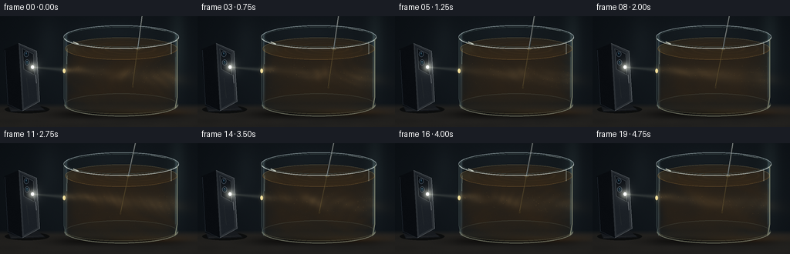
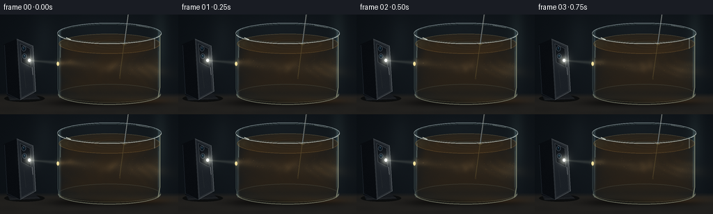
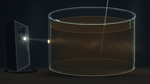

CODING AGENTS AS PIXEL WORLD MODELS
traex/GPT-6.1-Sol · phygen_049
点击播放 · 原生 RGB 像素
逐轮保存的候选
回放视频、检查图与代码变化。
每份候选均可单独播放。实际图片检查记录在下方工具轨迹中。
候选 01播放与检查图
点击播放 · 原生 RGB 像素

展开代码变化
--- 上一保存版本
+++ 本次保存版本
@@ -0,0 +1,278 @@
+from pathlib import Path
+import json
+import numpy as np
+from PIL import Image, ImageDraw, ImageFilter
+import artifact_io
+
+ROOT=Path(__file__).resolve().parent
+SPEC=json.loads((ROOT/'task_spec.json').read_text())
+S=3
+W,H=SPEC['width']*S,SPEC['height']*S
+X,Y=np.meshgrid(np.arange(W,dtype=np.float32)/S,np.arange(H,dtype=np.float32)/S)
+rng=np.random.default_rng(49)
+
+def layer():
+ return Image.new('RGBA',(W,H),(0,0,0,0))
+def poly(draw, xy, fill):
+ draw.polygon([(round(x*S),round(y*S)) for x,y in xy],fill=fill)
+def line(draw, xy, fill, width=1):
+ draw.line([(round(x*S),round(y*S)) for x,y in xy],fill=fill,width=max(1,round(width*S)))
+def ellipse(draw, box, fill=None, outline=None, width=1):
+ draw.ellipse(tuple(round(a*S) for a in box),fill=fill,outline=outline,width=max(1,round(width*S)))
+def composite(arr,lay):
+ rgba=np.asarray(lay,dtype=np.float32)
+ a=rgba[:,:,3:4]/255
+ return arr*(1-a)+rgba[:,:,:3]*a
+
+def backdrop():
+ vign=np.exp(-((X-150)/150)**2-((Y-72)/115)**2)
+ a=np.zeros((H,W,3),np.float32)
+ a[:]=[8,12,16]
+ a+=vign[:,:,None]*np.array([12,14,15])
+ # Deeply out-of-focus laboratory / tabletop backdrop, without distracting objects.
+ for cx,cy,rx,ry,c in [(230,38,11,55,[10,13,12]),(62,36,15,37,[5,6,6]),(146,19,43,10,[3,4,5])]:
+ g=np.exp(-((X-cx)/rx)**2-((Y-cy)/ry)**2)
+ a+=g[:,:,None]*c
+ desk=np.clip((Y-113)/6,0,1)
+ a=a*(1-desk[:,:,None])+desk[:,:,None]*(np.array([30,29,27])+vign[:,:,None]*6)
+ grain=(np.sin(X*.032+np.sin(Y*.45))*1.3+np.sin(X*.18+Y*.012)*.4)*desk
+ a+=grain[:,:,None]*np.array([1,.83,.6])
+ # Contact shadows and reflected light under the glass.
+ shadow=np.exp(-((X-155)/82)**4-((Y-127)/5.5)**2)
+ a*=1-.60*shadow[:,:,None]
+ glow=np.exp(-((X-188)/52)**2-((Y-124)/4.5)**2)
+ a+=glow[:,:,None]*[31,18,5]
+ return a
+BASE=backdrop()
+
+# The mobile phone is mostly seen edge-on, so its rear LED really points toward the vessel.
+def phone(arr):
+ p=layer();d=ImageDraw.Draw(p)
+ ellipse(d,(6,116,64,126),(5,7,8,190))
+ poly(d,[(9,112),(45,111),(58,122),(14,124)],(23,26,30,255))
+ line(d,[(15,122),(56,120)],(63,64,65,180),.6)
+ poly(d,[(5,43),(24,35),(47,45),(51,111),(29,123),(10,116)],(9,12,16,255))
+ poly(d,[(24,35),(47,45),(51,111),(29,123)],(42,47,52,255))
+ poly(d,[(26,38),(44,47),(48,110),(31,119)],(27,32,38,255))
+ line(d,[(24,35),(47,45),(51,111),(29,123)],(111,117,122,230),.8)
+ line(d,[(6,44),(10,114),(29,123)],(35,43,51,230),.7)
+ line(d,[(46,76),(47,87)],(99,104,109,240),1.1)
+ # Camera housing, lenses, flash; strongly foreshortened on the back plane.
+ poly(d,[(29,42),(43,49),(44,76),(31,69)],(13,17,22,255))
+ line(d,[(29,42),(43,49),(44,76),(31,69),(29,42)],(76,82,86,210),.6)
+ for cx,cy in [(34,49),(35,60)]:
+ ellipse(d,(cx-3,cy-3.8,cx+3,cy+3.8),(3,7,12,255),(76,90,103,255),.7)
+ ellipse(d,(cx-1.5,cy-2,cx+1.5,cy+2),(12,31,43,255))
+ ellipse(d,(cx-.7,cy-1.8,cx+.3,cy-.7),(83,119,143,255))
+ ellipse(d,(40,63.8,44,68.4),(255,252,233,255),(180,190,195,255),.6)
+ # Brushed metal and a faint lower-back reflection.
+ line(d,[(34,80),(37,106)],(57,62,64,130),.5)
+ return composite(arr,p)
+BASE=phone(BASE)
+
+# Cylindrical vessel: glass lip centered at y=27, liquid surface at y=42.
+CX=157.;R=73.;TOP=27.;BOTTOM=115.;K=.20
+q=(X-CX)/R
+half=np.sqrt(np.maximum(0,1-q*q))
+glass=(np.abs(q)<1)&(Y>TOP-14.6*half)&(Y<BOTTOM+14.6*half)
+body=(np.abs(q)<1)&(Y>TOP+14.6*half)&(Y<BOTTOM+14.6*half)
+# Static glass shell and transparent upper portion.
+BASE=np.where(glass[:,:,None],BASE*np.array([.80,.84,.86])+np.array([5.0,5.5,5.0]),BASE)
+# Gentle environmental reflection at the curved glass walls.
+edge=np.exp(-((np.abs(q)-.981)/.025)**2)*glass
+BASE+=edge[:,:,None]*np.array([29,37,39])
+
+# volume resolution is supersampled along the camera ray; there is no external renderer.
+# A coherent advected 3D sediment field makes the illuminated water genuinely move.
+ZHALF=R*half
+VOLUME_SLICES=22
+particle_rng=np.random.default_rng(161)
+N=1050
+pr=R*np.sqrt(particle_rng.uniform(.025,.97,N))
+pa=particle_rng.uniform(0,2*np.pi,N)
+ph=particle_rng.uniform(43,114,N)
+ps=particle_rng.uniform(.09,.38,N)
+brightness=particle_rng.uniform(.45,1,N)
+
+
+def field(x,z,h,t):
+ radius=np.sqrt((x-CX)**2+z*z)
+ # Differential rotation stretches mud into wisps, while large eddies carry them around.
+ turn=t*(.63+.42*np.exp(-(radius/48)**2))+(h-76)*.014+radius*.009
+ turn+=.13*np.sin(h*.085-t*.57)
+ cs=np.cos(turn); sn=np.sin(turn)
+ u=(x-CX)*cs-z*sn
+ v=(x-CX)*sn+z*cs
+ hh=h+3.4*np.sin(radius*.065-t*.63)+1.4*np.sin(u*.095+v*.038+t*.4)
+ warp=3.5*np.sin(u*.048+v*.055+hh*.076)+2*np.sin(v*.078-hh*.095)
+ n=(.43*np.sin(u*.078+v*.048+hh*.104+warp*.16)
+ +.27*np.sin(u*.149-v*.101+hh*.187+warp*.34)
+ +.17*np.sin(u*.291+v*.202-hh*.27+warp*.66)
+ +.08*np.sin(u*.603-v*.391+hh*.451)
+ +.05*np.sin(u*1.17+v*.82+hh*.961))
+ n=np.clip(.53+n*.54,.05,1.13)
+ # Settled material is darker and denser close to the bottom.
+ return .36+.89*n**1.6+.33*np.clip((h-100)/15,0,1)
+
+
+def render_volume(a,t):
+ accum=a.copy()
+ sourcex=42.; sourceh=66.1
+ # Light travels to the right, with only a shallow downward inclination.
+ bh=sourceh+.082*(X-sourcex)
+ rbeam=2.0+.067*np.maximum(X-sourcex,0)
+ dstep=2*ZHALF/VOLUME_SLICES
+ for j in range(VOLUME_SLICES):
+ # Back to front alpha-compositing gives the beam depth and translucent walls.
+ z=ZHALF*(-1+(j+.5)*2/VOLUME_SLICES)
+ h=Y-K*z
+ ripple=.32*np.sin(np.sqrt((X-170)**2+z*z)*.32-t*4)*np.exp(-((X-170)**2+z*z)/3500)
+ inside=(np.abs(q)<1)&(h>42+ripple)&(h<114)
+ density=field(X,z,h,t)
+ radial=((h-bh)**2+(z+3.2)**2)/rbeam**2
+ cone=np.exp(-radial*1.6)*(X>80)
+ # Extinction along beam and camera rays: dimmer far edge, warm multiple scattering.
+ att=np.exp(-np.maximum(X-83,0)*.0085)
+ beam=cone*att
+ halo=np.exp(-radial*.29)*att*.085
+ scatter=(beam+halo)*(1.08+.70*density)
+ ambient=np.empty((H,W,3),np.float32)
+ ambient[:]=[47,35,22]
+ ambient+=scatter[:,:,None]*np.array([266,209,122])
+ # Thin suspended sheets create alternating luminous filaments and dark intricate curls.
+ ambient+=(cone*att*np.clip(density-.90,0,.75))[:,:,None]*np.array([58,35,11])
+ alpha=(1-np.exp(-density*dstep*.0135))*inside
+ accum=accum*(1-alpha[:,:,None])+ambient*alpha[:,:,None]
+ # Soft indirect light around the beam is restrained and stays inside the water.
+ mask=(np.abs(q)<1)&(Y>42-14*half)&(Y<114+14*half)
+ return accum,mask
+
+
+def water_surface(a,t):
+ # Looking down onto the free surface: small elliptical, concentric moving ripples.
+ z=(Y-42)/K
+ valid=((X-CX)**2+z*z<R*R)&(np.abs(q)<1)
+ rr=np.sqrt((X-169-3*np.sin(t*.6))**2+(z-2*np.cos(t*.6))**2)
+ rip=np.sin(rr*.44-t*5.0+np.sin(rr*.095)*1.1)
+ highlight=np.clip(rip-.62,0,1)*np.exp(-rr/70)
+ surf=np.zeros_like(a);surf[:]=[67,48,25]
+ surf+=highlight[:,:,None]*[65,44,19]
+ surf+=np.exp(-((X-91)/12)**2-((Y-42)/8)**2)[:,:,None]*[24,23,13]
+ alpha=.38*valid
+ a=a*(1-alpha[:,:,None])+surf*alpha[:,:,None]
+ # Meniscus, brightest at the flashlight side, with a dark front surface boundary.
+ p=layer();d=ImageDraw.Draw(p)
+ coords=[]
+ for ang in np.linspace(0,np.pi,160):
+ coords.append((CX+72.2*np.cos(ang),42+14.4*np.sin(ang)))
+ line(d,coords,(167,126,67,94),.65)
+ coords=[]
+ for ang in np.linspace(np.pi,2*np.pi,160):
+ coords.append((CX+72.2*np.cos(ang),42+14.4*np.sin(ang)))
+ line(d,coords,(154,147,112,90),.55)
+ return composite(a,p)
+
+
+def particles(a,t):
+ turn=t*(.63+.42*np.exp(-(pr/48)**2))+(ph-76)*.014+pr*.009
+ ang=pa+turn
+ px=CX+pr*np.cos(ang)
+ pz=pr*np.sin(ang)
+ py=ph+K*pz+1.4*np.sin(pa*2+t*.9)
+ bheight=66.1+.082*(px-42)
+ rad=2+.067*(px-42)
+ lighting=np.exp(-1.55*((ph-bheight)**2+(pz+3.2)**2)/rad**2)*np.exp(-np.maximum(px-83,0)*.0085)
+ p=layer();d=ImageDraw.Draw(p)
+ for i in range(N):
+ front=np.exp(-.013*(ZHALF[int(np.clip(py[i]*S,0,H-1)),int(np.clip(px[i]*S,0,W-1))]-pz[i]))
+ lum=lighting[i]*front*brightness[i]
+ if lum>.018:
+ c=(int(min(255,105+lum*190)),int(min(250,78+lum*178)),int(min(219,38+lum*154)),int(65+lum*170))
+ sz=ps[i]*(.65+lum*.4)
+ ellipse(d,(px[i]-sz,py[i]-sz,px[i]+sz,py[i]+sz),c)
+ elif i%4==0:
+ ellipse(d,(px[i]-.12,py[i]-.12,px[i]+.12,py[i]+.12),(64,49,30,70))
+ return composite(a,p)
+
+
+def stirrer(a,t):
+ p=layer();d=ImageDraw.Draw(p)
+ tipx=164+8*np.cos(t*1.1);tipy=91+1.6*np.sin(t*1.1)
+ upperx=181+4*np.cos(t*1.1)
+ # Thin stainless-steel stirring rod; its submerged portion is amber and attenuated.
+ sx=upperx+(tipx-upperx)*(43+8)/(tipy+8)
+ line(d,[(upperx,-8),(sx,43)],(27,31,33,255),2.1)
+ line(d,[(upperx-.45,-8),(sx-.45,43)],(163,170,169,245),.55)
+ line(d,[(upperx+.45,-8),(sx+.45,43)],(62,67,64,255),.55)
+ line(d,[(sx,43),(tipx,tipy)],(55,47,28,140),1.7)
+ line(d,[(sx-.5,43),(tipx-.5,tipy)],(170,142,80,85),.55)
+ ellipse(d,(tipx-1.1,tipy-1.5,tipx+1.1,tipy+1.5),(66,54,31,140))
+ # Refraction offsets the rod slightly where it enters the water.
+ ellipse(d,(sx-2.5,41.8,sx+2.9,43.6),None,(161,142,86,120),.55)
+ return composite(a,p)
+
+
+def glass_finish(a,t):
+ p=layer();d=ImageDraw.Draw(p)
+ # Heavy glass foot and doubled rim are essential recognizable material cues.
+ ellipse(d,(83,100.4,231,130),(32,37,35,35),(80,85,74,135),.75)
+ # Bottom front arc.
+ coords=[(CX+73*np.cos(ang),115+14.6*np.sin(ang)) for ang in np.linspace(0,np.pi,180)]
+ line(d,coords,(147,151,129,185),1.1)
+ coords=[(CX+71.5*np.cos(ang),115+11.8*np.sin(ang)) for ang in np.linspace(.05,np.pi-.05,180)]
+ line(d,coords,(101,99,75,150),.6)
+ # Back rim first, then stronger forward half. A narrow thick glass lip, not an opaque lid.
+ for start,end,col,w in [(np.pi,2*np.pi,(139,155,158,210),.85),(0,np.pi,(193,204,199,225),1.05)]:
+ coords=[(CX+74.4*np.cos(ang),TOP+14.8*np.sin(ang)) for ang in np.linspace(start,end,200)]
+ line(d,coords,col,w)
+ coords=[(CX+72.3*np.cos(ang),TOP+13.0*np.sin(ang)) for ang in np.linspace(0,2*np.pi,230)]
+ line(d,coords,(64,81,80,200),.65)
+ # Vertical walls reflect narrow softbox-like streaks, colored by the incident beam.
+ line(d,[(82.8,27),(82.8,107),(85.5,120)],(107,128,124,150),.75)
+ line(d,[(86.5,42),(86.4,62)],(166,189,178,125),.7)
+ line(d,[(229.6,30),(229.6,105),(226.7,120)],(182,186,151,165),.95)
+ line(d,[(227.2,53),(227.1,105)],(80,105,100,85),.6)
+ line(d,[(221.7,35),(221.7,49)],(183,197,192,95),1.2)
+ line(d,[(94.7,33),(101.2,36)],(230,237,222,210),1.2)
+ line(d,[(196,15.2),(214,18.5)],(192,204,203,190),.7)
+ # Left-hand rim catches the concentrated incoming beam.
+ ellipse(d,(81.4,68,84.7,74),(249,226,160,215))
+ return composite(a,p)
+
+
+def light_finish(a,t,mask):
+ # The beam is almost invisible in clear air and intensely visible in muddy water.
+ bh=66.1+.082*(X-42)
+ distance=np.maximum(X-42,0)
+ aircone=np.exp(-((Y-bh)/(1.25+.074*distance))**2*2.6)*((X>43)&(X<83))
+ a+=aircone[:,:,None]*[27,27,23]
+ # Emergent scattering and refracted exit caustic, kept low compared to the source.
+ out=np.exp(-((Y-(81.5+.13*(X-230)))/(7+.15*np.maximum(X-230,0)))**2)*((X>230)&(X<256))*np.exp(-np.maximum(X-230,0)/15)
+ a+=out[:,:,None]*[13,9,4]
+ # Physical LED bloom and small optical glare, not an artificial large starburst.
+ r2=(X-42.1)**2+(Y-66.1)**2
+ halo=np.exp(-r2/31)*.76+np.exp(-r2/145)*.14
+ a+=halo[:,:,None]*[164,164,148]
+ core=np.exp(-r2/.95)
+ a=a*(1-core[:,:,None])+core[:,:,None]*[255,255,251]
+ a+=np.exp(-((X-83.7)**2/12+(Y-70.2)**2/34))[:,:,None]*[30,25,12]
+ return a
+
+frames=[]
+for f in range(SPEC['frames']):
+ t=f/SPEC['fps']
+ a,mask=render_volume(BASE,t)
+ a=water_surface(a,t)
+ a=particles(a,t)
+ a=stirrer(a,t)
+ a=glass_finish(a,t)
+ a=light_finish(a,t,mask)
+ # Fine sensor texture is stable in time to avoid distracting video flicker.
+ tex=np.random.default_rng(700).normal(0,.53,(H,W,1))
+ a+=tex
+ a=np.clip(a,0,255).astype(np.uint8)
+ im=Image.fromarray(a).resize((SPEC['width'],SPEC['height']),Image.Resampling.LANCZOS)
+ frames.append(np.asarray(im,dtype=np.uint8))
+ print(f'frame {f+1}/{SPEC["frames"]}',flush=True)
+artifact_io.save(np.stack(frames),ROOT)
+print('Saved RGB video artifacts.',flush=True)
候选 02播放与检查图
点击播放 · 原生 RGB 像素

展开代码变化
--- 上一保存版本
+++ 本次保存版本
@@ -98,13 +98,13 @@
def field(x,z,h,t):
radius=np.sqrt((x-CX)**2+z*z)
# Differential rotation stretches mud into wisps, while large eddies carry them around.
- turn=t*(.63+.42*np.exp(-(radius/48)**2))+(h-76)*.014+radius*.009
- turn+=.13*np.sin(h*.085-t*.57)
+ turn=t*(.63+.42*np.exp(-(radius/48)**2))+(h-76)*.034+radius*.014
+ turn+=.22*np.sin(h*.085-t*.57)
cs=np.cos(turn); sn=np.sin(turn)
u=(x-CX)*cs-z*sn
v=(x-CX)*sn+z*cs
hh=h+3.4*np.sin(radius*.065-t*.63)+1.4*np.sin(u*.095+v*.038+t*.4)
- warp=3.5*np.sin(u*.048+v*.055+hh*.076)+2*np.sin(v*.078-hh*.095)
+ warp=6.5*np.sin(u*.048+v*.055+hh*.076)+3.5*np.sin(v*.078-hh*.095)
n=(.43*np.sin(u*.078+v*.048+hh*.104+warp*.16)
+.27*np.sin(u*.149-v*.101+hh*.187+warp*.34)
+.17*np.sin(u*.291+v*.202-hh*.27+warp*.66)
@@ -112,7 +112,7 @@
+.05*np.sin(u*1.17+v*.82+hh*.961))
n=np.clip(.53+n*.54,.05,1.13)
# Settled material is darker and denser close to the bottom.
- return .36+.89*n**1.6+.33*np.clip((h-100)/15,0,1)
+ return .16+1.53*n**2.1+.33*np.clip((h-100)/15,0,1)
def render_volume(a,t):
@@ -120,7 +120,7 @@
sourcex=42.; sourceh=66.1
# Light travels to the right, with only a shallow downward inclination.
bh=sourceh+.082*(X-sourcex)
- rbeam=2.0+.067*np.maximum(X-sourcex,0)
+ rbeam=2.0+.084*np.maximum(X-sourcex,0)
dstep=2*ZHALF/VOLUME_SLICES
for j in range(VOLUME_SLICES):
# Back to front alpha-compositing gives the beam depth and translucent walls.
@@ -134,13 +134,13 @@
# Extinction along beam and camera rays: dimmer far edge, warm multiple scattering.
att=np.exp(-np.maximum(X-83,0)*.0085)
beam=cone*att
- halo=np.exp(-radial*.29)*att*.085
+ halo=np.exp(-radial*.29)*att*.035
scatter=(beam+halo)*(1.08+.70*density)
ambient=np.empty((H,W,3),np.float32)
ambient[:]=[47,35,22]
- ambient+=scatter[:,:,None]*np.array([266,209,122])
+ ambient+=scatter[:,:,None]*np.array([1500,1160,660])
# Thin suspended sheets create alternating luminous filaments and dark intricate curls.
- ambient+=(cone*att*np.clip(density-.90,0,.75))[:,:,None]*np.array([58,35,11])
+ ambient+=(cone*att*np.clip(density-.90,0,.75))[:,:,None]*np.array([220,142,52])
alpha=(1-np.exp(-density*dstep*.0135))*inside
accum=accum*(1-alpha[:,:,None])+ambient*alpha[:,:,None]
# Soft indirect light around the beam is restrained and stays inside the water.
候选 03播放与检查图
可观测工具轨迹
实际执行的命令与返回图片。
命令 1exit 0
/bin/bash -lc 'ls -la && cat prompt.txt && cat GENERATION_RULES.md && cat task_spec.json'
命令 2exit 0
/bin/bash -lc "cat artifact_io.py && python - <<'PY'
import numpy, PIL
print('numpy',numpy.__version__,'PIL',PIL.__version__)
PY"命令 3exit 0
/bin/bash -lc "cat > generate.py <<'PY'
from pathlib import Path
import json
import numpy as np
from PIL import Image, ImageDraw, ImageFilter
import artifact_io
ROOT=Path(__file__).resolve().parent
SPEC=json.loads((ROOT/'task_spec.json').read_text())
S=3
W,H=SPEC['width']*S,SPEC['height']*S
X,Y=np.meshgrid(np.arange(W,dtype=np.float32)/S,np.arange(H,dtype=np.float32)/S)
rng=np.random.default_rng(49)
def layer():
return Image.new('RGBA',(W,H),(0,0,0,0))
def poly(draw, xy, fill):
draw.polygon([(round(x*S),round(y*S)) for x,y in xy],fill=fill)
def line(draw, xy, fill, width=1):
draw.line([(round(x*S),round(y*S)) for x,y in xy],fill=fill,width=max(1,round(width*S)))
def ellipse(draw, box, fill=None, outline=None, width=1):
draw.ellipse(tuple(round(a*S) for a in box),fill=fill,outline=outline,width=max(1,round(width*S)))
def composite(arr,lay):
rgba=np.asarray(lay,dtype=np.float32)
a=rgba[:,:,3:4]/255
return arr*(1-a)+rgba[:,:,:3]*a
def backdrop():
vign=np.exp(-((X-150)/150)**2-((Y-72)/115)**2)
a=np.zeros((H,W,3),np.float32)
a[:]=[8,12,16]
a+=vign[:,:,None]*np.array([12,14,15])
# Deeply out-of-focus laboratory / tabletop backdrop, without distracting objects.
for cx,cy,rx,ry,c in [(230,38,11,55,[10,13,12]),(62,36,15,37,[5,6,6]),(146,19,43,10,[3,4,5])]:
g=np.exp(-((X-cx)/rx)**2-((Y-cy)/ry)**2)
a+=g[:,:,None]*c
desk=np.clip((Y-113)/6,0,1)
a=a*(1-desk[:,:,None])+desk[:,:,None]*(np.array([30,29,27])+vign[:,:,None]*6)
grain=(np.sin(X*.032+np.sin(Y*.45))*1.3+np.sin(X*.18+Y*.012)*.4)*desk
a+=grain[:,:,None]*np.array([1,.83,.6])
# Contact shadows and reflected light under the glass.
shadow=np.exp(-((X-155)/82)**4-((Y-127)/5.5)**2)
a*=1-.60*shadow[:,:,None]
glow=np.exp(-((X-188)/52)**2-((Y-124)/4.5)**2)
a+=glow[:,:,None]*[31,18,5]
return a
BASE=backdrop()
# The mobile phone is mostly seen edge-on, so its rear LED really points toward the vessel.
def phone(arr):
p=layer();d=ImageDraw.Draw(p)
ellipse(d,(6,116,64,126),(5,7,8,190))
poly(d,[(9,112),(45,111),(58,122),(14,124)],(23,26,30,255))
line(d,[(15,122),(56,120)],(63,64,65,180),.6)
poly(d,[(5,43),(24,35),(47,45),(51,111),(29,123),(10,116)],(9,12,16,255))
poly(d,[(24,35),(47,45),(51,111),(29,123)],(42,47,52,255))
poly(d,[(26,38),(44,47),(48,110),(31,119)],(27,32,38,255))
line(d,[(24,35),(47,45),(51,111),(29,123)],(111,117,122,230),.8)
line(d,[(6,44),(10,114),(29,123)],(35,43,51,230),.7)
line(d,[(46,76),(47,87)],(99,104,109,240),1.1)
# Camera housing, lenses, flash; strongly foreshortened on the back plane.
poly(d,[(29,42),(43,49),(44,76),(31,69)],(13,17,22,255))
line(d,[(29,42),(43,49),(44,76),(31,69),(29,42)],(76,82,86,210),.6)
for cx,cy in [(34,49),(35,60)]:
ellipse(d,(cx-3,cy-3.8,cx+3,cy+3.8),(3,7,12,255),(76,90,103,255),.7)
ellipse(d,(cx-1.5,cy-2,cx+1.5,cy+2),(12,31,43,255))
ellipse(d,(cx-.7,cy-1.8,cx+.3,cy-.7),(83,119,143,255))
ellipse(d,(40,63.8,44,68.4),(255,252,233,255),(180,190,195,255),.6)
# Brushed metal and a faint lower-back reflection.
line(d,[(34,80),(37,106)],(57,62,64,130),.5)
return composite(arr,p)
BASE=phone(BASE)
# Cylindrical vessel: glass lip centered at y=27, liquid surface at y=42.
CX=157.;R=73.;TOP=27.;BOTTOM=115.;K=.20
q=(X-CX)/R
half=np.sqrt(np.maximum(0,1-q*q))
glass=(np.abs(q)<1)&(Y>TOP-14.6*half)&(Y<BOTTOM+14.6*half)
body=(np.abs(q)<1)&(Y>TOP+14.6*half)&(Y<BOTTOM+14.6*half)
# Static glass shell and transparent upper portion.
BASE=np.where(glass[:,:,None],BASE*np.array([.80,.84,.86])+np.array([5.0,5.5,5.0]),BASE)
# Gentle environmental reflection at the curved glass walls.
edge=np.exp(-((np.abs(q)-.981)/.025)**2)*glass
BASE+=edge[:,:,None]*np.array([29,37,39])
# volume resolution is supersampled along the camera ray; there is no external renderer.
# A coherent advected 3D sediment field makes the illuminated water genuinely move.
ZHALF=R*half
VOLUME_SLICES=22
particle_rng=np.random.default_rng(161)
N=1050
pr=R*np.sqrt(particle_rng.uniform(.025,.97,N))
pa=particle_rng.uniform(0,2*np.pi,N)
ph=particle_rng.uniform(43,114,N)
ps=particle_rng.uniform(.09,.38,N)
brightness=particle_rng.uniform(.45,1,N)
def field(x,z,h,t):
radius=np.sqrt((x-CX)**2+z*z)
# Differential rotation stretches mud into wisps, while large eddies carry them around.
turn=t*(.63+.42*np.exp(-(radius/48)**2))+(h-76)*.014+radius*.009
turn+=.13*np.sin(h*.085-t*.57)
cs=np.cos(turn); sn=np.sin(turn)
u=(x-CX)*cs-z*sn
v=(x-CX)*sn+z*cs
hh=h+3.4*np.sin(radius*.065-t*.63)+1.4*np.sin(u*.095+v*.038+t*.4)
warp=3.5*np.sin(u*.048+v*.055+hh*.076)+2*np.sin(v*.078-hh*.095)
n=(.43*np.sin(u*.078+v*.048+hh*.104+warp*.16)
+.27*np.sin(u*.149-v*.101+hh*.187+warp*.34)
+.17*np.sin(u*.291+v*.202-hh*.27+warp*.66)
+.08*np.sin(u*.603-v*.391+hh*.451)
+.05*np.sin(u*1.17+v*.82+hh*.961))
n=np.clip(.53+n*.54,.05,1.13)
# Settled material is darker and denser close to the bottom.
return .36+.89*n**1.6+.33*np.clip((h-100)/15,0,1)
def render_volume(a,t):
accum=a.copy()
sourcex=42.; sourceh=66.1
# Light travels to the right, with only a shallow downward inclination.
bh=sourceh+.082*(X-sourcex)
rbeam=2.0+.067*np.maximum(X-sourcex,0)
dstep=2*ZHALF/VOLUME_SLICES
for j in range(VOLUME_SLICES):
# Back to front alpha-compositing gives the beam depth and translucent walls.
z=ZHALF*(-1+(j+.5)*2/VOLUME_SLICES)
h=Y-K*z
ripple=.32*np.sin(np.sqrt((X-170)**2+z*z)*.32-t*4)*np.exp(-((X-170)**2+z*z)/3500)
inside=(np.abs(q)<1)&(h>42+ripple)&(h<114)
density=field(X,z,h,t)
radial=((h-bh)**2+(z+3.2)**2)/rbeam**2
cone=np.exp(-radial*1.6)*(X>80)
# Extinction along beam and camera rays: dimmer far edge, warm multiple scattering.
att=np.exp(-np.maximum(X-83,0)*.0085)
beam=cone*att
halo=np.exp(-radial*.29)*att*.085
scatter=(beam+halo)*(1.08+.70*density)
ambient=np.empty((H,W,3),np.float32)
ambient[:]=[47,35,22]
ambient+=scatter[:,:,None]*np.array([266,209,122])
# Thin suspended sheets create alternating luminous filaments and dark intricate curls.
ambient+=(cone*att*np.clip(density-.90,0,.75))[:,:,None]*np.array([58,35,11])
alpha=(1-np.exp(-density*dstep*.0135))*inside
accum=accum*(1-alpha[:,:,None])+ambient*alpha[:,:,None]
# Soft indirect light around the beam is restrained and stays inside the water.
mask=(np.abs(q)<1)&(Y>42-14*half)&(Y<114+14*half)
return accum,mask
def water_surface(a,t):
# Looking down onto the free surface: small elliptical, concentric moving ripples.
z=(Y-42)/K
valid=((X-CX)**2+z*z<R*R)&(np.abs(q)<1)
rr=np.sqrt((X-169-3*np.sin(t*.6))**2+(z-2*np.cos(t*.6))**2)
rip=np.sin(rr*.44-t*5.0+np.sin(rr*.095)*1.1)
highlight=np.clip(rip-.62,0,1)*np.exp(-rr/70)
surf=np.zeros_like(a);surf[:]=[67,48,25]
surf+=highlight[:,:,None]*[65,44,19]
surf+=np.exp(-((X-91)/12)**2-((Y-42)/8)**2)[:,:,None]*[24,23,13]
alpha=.38*valid
a=a*(1-alpha[:,:,None])+surf*alpha[:,:,None]
# Meniscus, brightest at the flashlight side, with a dark front surface boundary.
p=layer();d=ImageDraw.Draw(p)
coords=[]
for ang in np.linspace(0,np.pi,160):
coords.append((CX+72.2*np.cos(ang),42+14.4*np.sin(ang)))
line(d,coords,(167,126,67,94),.65)
coords=[]
for ang in np.linspace(np.pi,2*np.pi,160):
coords.append((CX+72.2*np.cos(ang),42+14.4*np.sin(ang)))
line(d,coords,(154,147,112,90),.55)
return composite(a,p)
def particles(a,t):
turn=t*(.63+.42*np.exp(-(pr/48)**2))+(ph-76)*.014+pr*.009
ang=pa+turn
px=CX+pr*np.cos(ang)
pz=pr*np.sin(ang)
py=ph+K*pz+1.4*np.sin(pa*2+t*.9)
bheight=66.1+.082*(px-42)
rad=2+.067*(px-42)
lighting=np.exp(-1.55*((ph-bheight)**2+(pz+3.2)**2)/rad**2)*np.exp(-np.maximum(px-83,0)*.0085)
p=layer();d=ImageDraw.Draw(p)
for i in range(N):
front=np.exp(-.013*(ZHALF[int(np.clip(py[i]*S,0,H-1)),int(np.clip(px[i]*S,0,W-1))]-pz[i]))
lum=lighting[i]*front*brightness[i]
if lum>.018:
c=(int(min(255,105+lum*190)),int(min(250,78+lum*178)),int(min(219,38+lum*154)),int(65+lum*170))
sz=ps[i]*(.65+lum*.4)
ellipse(d,(px[i]-sz,py[i]-sz,px[i]+sz,py[i]+sz),c)
elif i%4==0:
ellipse(d,(px[i]-.12,py[i]-.12,px[i]+.12,py[i]+.12),(64,49,30,70))
return composite(a,p)
def stirrer(a,t):
p=layer();d=ImageDraw.Draw(p)
tipx=164+8*np.cos(t*1.1);tipy=91+1.6*np.sin(t*1.1)
upperx=181+4*np.cos(t*1.1)
# Thin stainless-steel stirring rod; its submerged portion is amber and attenuated.
sx=upperx+(tipx-upperx)*(43+8)/(tipy+8)
line(d,[(upperx,-8),(sx,43)],(27,31,33,255),2.1)
line(d,[(upperx-.45,-8),(sx-.45,43)],(163,170,169,245),.55)
line(d,[(upperx+.45,-8),(sx+.45,43)],(62,67,64,255),.55)
line(d,[(sx,43),(tipx,tipy)],(55,47,28,140),1.7)
line(d,[(sx-.5,43),(tipx-.5,tipy)],(170,142,80,85),.55)
ellipse(d,(tipx-1.1,tipy-1.5,tipx+1.1,tipy+1.5),(66,54,31,140))
# Refraction offsets the rod slightly where it enters the water.
ellipse(d,(sx-2.5,41.8,sx+2.9,43.6),None,(161,142,86,120),.55)
return composite(a,p)
def glass_finish(a,t):
p=layer();d=ImageDraw.Draw(p)
# Heavy glass foot and doubled rim are essential recognizable material cues.
ellipse(d,(83,100.4,231,130),(32,37,35,35),(80,85,74,135),.75)
# Bottom front arc.
coords=[(CX+73*np.cos(ang),115+14.6*np.sin(ang)) for ang in np.linspace(0,np.pi,180)]
line(d,coords,(147,151,129,185),1.1)
coords=[(CX+71.5*np.cos(ang),115+11.8*np.sin(ang)) for ang in np.linspace(.05,np.pi-.05,180)]
line(d,coords,(101,99,75,150),.6)
# Back rim first, then stronger forward half. A narrow thick glass lip, not an opaque lid.
for start,end,col,w in [(np.pi,2*np.pi,(139,155,158,210),.85),(0,np.pi,(193,204,199,225),1.05)]:
coords=[(CX+74.4*np.cos(ang),TOP+14.8*np.sin(ang)) for ang in np.linspace(start,end,200)]
line(d,coords,col,w)
coords=[(CX+72.3*np.cos(ang),TOP+13.0*np.sin(ang)) for ang in np.linspace(0,2*np.pi,230)]
line(d,coords,(64,81,80,200),.65)
# Vertical walls reflect narrow softbox-like streaks, colored by the incident beam.
line(d,[(82.8,27),(82.8,107),(85.5,120)],(107,128,124,150),.75)
line(d,[(86.5,42),(86.4,62)],(166,189,178,125),.7)
line(d,[(229.6,30),(229.6,105),(226.7,120)],(182,186,151,165),.95)
line(d,[(227.2,53),(227.1,105)],(80,105,100,85),.6)
line(d,[(221.7,35),(221.7,49)],(183,197,192,95),1.2)
line(d,[(94.7,33),(101.2,36)],(230,237,222,210),1.2)
line(d,[(196,15.2),(214,18.5)],(192,204,203,190),.7)
# Left-hand rim catches the concentrated incoming beam.
ellipse(d,(81.4,68,84.7,74),(249,226,160,215))
return composite(a,p)
def light_finish(a,t,mask):
# The beam is almost invisible in clear air and intensely visible in muddy water.
bh=66.1+.082*(X-42)
distance=np.maximum(X-42,0)
aircone=np.exp(-((Y-bh)/(1.25+.074*distance))**2*2.6)*((X>43)&(X<83))
a+=aircone[:,:,None]*[27,27,23]
# Emergent scattering and refracted exit caustic, kept low compared to the source.
out=np.exp(-((Y-(81.5+.13*(X-230)))/(7+.15*np.maximum(X-230,0)))**2)*((X>230)&(X<256))*np.exp(-np.maximum(X-230,0)/15)
a+=out[:,:,None]*[13,9,4]
# Physical LED bloom and small optical glare, not an artificial large starburst.
r2=(X-42.1)**2+(Y-66.1)**2
halo=np.exp(-r2/31)*.76+np.exp(-r2/145)*.14
a+=halo[:,:,None]*[164,164,148]
core=np.exp(-r2/.95)
a=a*(1-core[:,:,None])+core[:,:,None]*[255,255,251]
a+=np.exp(-((X-83.7)**2/12+(Y-70.2)**2/34))[:,:,None]*[30,25,12]
return a
frames=[]
for f in range(SPEC['frames']):
t=f/SPEC['fps']
a,mask=render_volume(BASE,t)
a=water_surface(a,t)
a=particles(a,t)
a=stirrer(a,t)
a=glass_finish(a,t)
a=light_finish(a,t,mask)
# Fine sensor texture is stable in time to avoid distracting video flicker.
tex=np.random.default_rng(700).normal(0,.53,(H,W,1))
a+=tex
a=np.clip(a,0,255).astype(np.uint8)
im=Image.fromarray(a).resize((SPEC['width'],SPEC['height']),Image.Resampling.LANCZOS)
frames.append(np.asarray(im,dtype=np.uint8))
print(f'frame {f+1}/{SPEC[\"frames\"]}',flush=True)
artifact_io.save(np.stack(frames),ROOT)
print('Saved RGB video artifacts.',flush=True)
PY
python generate.py"命令 4exit 0
/bin/bash -lc 'command -v ffmpeg || true'
命令 5exit 0
/bin/bash -lc "python - <<'PY'
p='generate.py'
s=open(p).read().replace('(h-76)*.014+radius*.009','(h-76)*.034+radius*.014').replace('turn+=.13*np.sin','turn+=.22*np.sin').replace('warp=3.5*np.sin','warp=6.5*np.sin').replace('+2*np.sin(v*.078-hh*.095)','+3.5*np.sin(v*.078-hh*.095)').replace('return .36+.89*n**1.6','return .16+1.53*n**2.1').replace('rbeam=2.0+.067','rbeam=2.0+.084').replace('att*.085','att*.035').replace('[266,209,122]','[1500,1160,660]').replace('[58,35,11]','[220,142,52]')
open(p,'w').write(s)
PY
python generate.py"命令 6exit 0
/bin/bash -lc "python - <<'PY'
import numpy as np
from pathlib import Path
from PIL import Image
p=Path('.')
a=np.load(p/'pixels.npz')['pixels']
assert a.shape==(144,256,20)
assert len(list((p/'frames').glob('*.png')))==20
assert all(Image.open(p/'frames'/f'{i:02d}.png').mode=='RGB' for i in range(20))
assert (p/'index.html').is_file()
print('Verified: 20 RGB frames, 256Ã144, 4 fps; player and pixels.npz exist.')
PY"视觉工具实际返回图片 1

视觉工具实际返回图片 2

视觉工具实际返回图片 3

保存候选 3 份；完成命令 6 次；可验证图片返回 3 张。原始 API 响应与完整日志保留在本地。